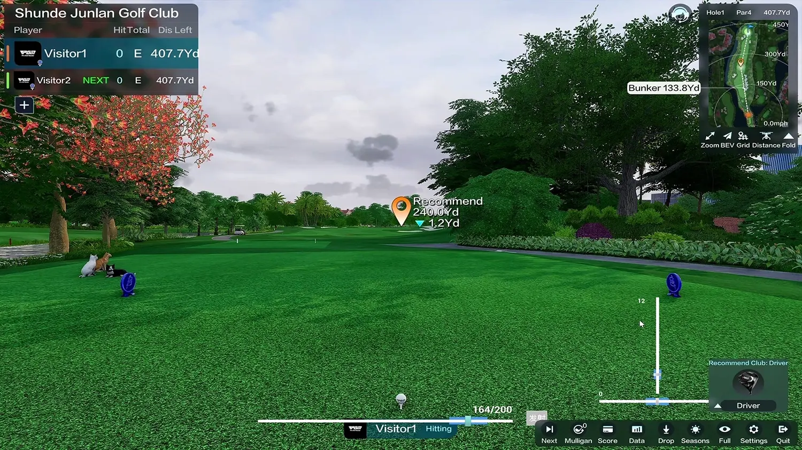

Four-camera shot sensing
Four high-speed cameras capture shot information from multiple angles. An onboard MCU processes trajectory image data. Request the supported metrics and test conditions for the selected model.
Plan a PGM P8 setup for a home studio, training facility or commercial venue. Explore the camera-based tracking, four play modes and connected components, then confirm an itemized configuration for your space.

Four high-speed cameras capture shot information from multiple angles. An onboard MCU processes trajectory image data. Request the supported metrics and test conditions for the selected model.
The P8 presentation includes practice range, course play, game mode and online multiplayer. Confirm the software edition, current course list and connection requirements with your order.
Discuss the eight-direction motion platform, screen format and projection equipment. These choices affect the physical layout and final configuration.
| System area | Items to confirm in the quotation |
|---|---|
| Tracking and software | Detector model, supplied software, supported measurements, included course access and any renewal or upgrade charges. |
| Screen and enclosure | Single or curved screen, screen dimensions, enclosure structure, padding and installation clearances. |
| Playing surfaces | Base, hitting mat, turf and any selected motion platform or automatic ball-return equipment. |
| Projection and computer | Projector model, mounting method, supported resolution, computer specification and required connections. |
| Console and accessories | Selected control equipment, optional accessories and compatibility with the rest of the system. |
| Delivery and support | Packing, transport terms, installation scope, commissioning and written component warranty. |
The interactive system on our homepage illustrates ten component areas. It is not a universal packing list. Use the written quotation to distinguish supplied hardware, optional items and customer-supplied equipment.
Record clear width, depth and height, including beams, light fittings, doors and any obstructions. Tell us whether both left- and right-handed players will use the bay.
The published single-screen standard reference is 6.0 m deep × 4.0 m wide × 3.0 m high. It is a planning reference, not a guarantee of swing clearance for every player or configuration.
See all published room references →Review screen spacing, projector position, equipment locations, power and connection requirements before ordering. Photos and a dimensioned room drawing help the team identify constraints.
Ask which edition and play modes are supplied, whether commercial operation is permitted, and which updates or subscriptions carry additional charges. Confirm these details alongside the hardware.
Work through bay layout, daily operation, commercial-use terms and maintenance. Explore commercial planning →
Evaluate the P8 around your customers, demonstration needs and local support capability. Discuss distribution →
The final system depends on the agreed configuration. Request an itemized quotation identifying the detector, software, screen, projector, computer, playing surfaces and any selected accessories.
Ask for the measurement definition, test conditions and supported metrics for the specific detector. A detection-success percentage should not be treated as the accuracy of every measured shot parameter.
Provide the exact model and specifications for compatibility review. Screen size, projection geometry, software requirements and connections must be checked together.
Pricing depends on the equipment, destination and installation scope. Ask for hardware, software, freight, installation and any ongoing charges to be listed separately. No universal price is published here.
Watch the product and application videos on our homepage, then contact PGM for information relevant to your planned configuration.
Tell us where the system will be installed, who will use it and what you need from the setup. Include room dimensions if you have them.
PGM is the company's own brand. This website is operated by 佛山市顺德异邦高尔夫用品有限公司.
Your details are used to respond to this inquiry. Please do not include sensitive personal information.
With your permission, we use Google Analytics to understand website visits and improve our content. You can contact us without accepting analytics.
This website is operated by 佛山市顺德异邦高尔夫用品有限公司, owner of the PGM brand. Contact: tracy@pgmgolf.com.
Essential delivery, security and form services support this website. Details you submit are used to handle your enquiry. If you accept analytics, Google processes visit and interaction data as described in its Privacy Policy. Our custom events exclude your name, email, company and message.
Only predefined marketing channel labels are retained in this tab for up to 30 minutes after analytics consent. Arbitrary query parameters and fragments are removed from analytics page URLs. Your analytics choice is saved in this browser for 180 days. Use the footer to change it; declining stops collection and clears this site's analytics cookies and stored campaign labels.